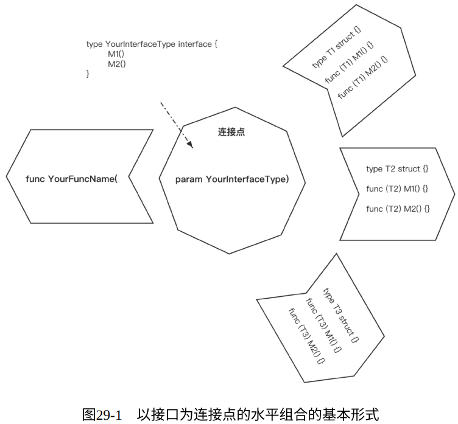

如果说C++和Java是关于类型层次结构和类型分类的语言，那么Go则是关于组合的语言。
——Rob Pike，Go语言之父
“偏好组合，正交解耦” 是Go语言的重要设计哲学之一。如果说 “追求简单” 聚焦的是为Go程序提供各种小而精的零件，那么组合关注的就是如何将这些零件关联到一起，搭建出程序的静态骨架。
1. 一切皆组合
在语言设计层面，Go提供了诸多正交的语法元素供后续组合使用，包括：
- Go语言无类型体系（type hierarchy），类型定义正交独立；
- 方法和类型是正交的，每种类型都可以拥有自己的方法集合；
- 接口与其实现者之间无显式关联；
Go语言主要有两种组合方式：
- 垂直组合（类型组合）：Go语言主要通过类型嵌入机制实现垂直组合，进而实现方法实现的复用、接口定义重用等。
- 水平组合：通常Go程序以接口类型变量作为程序水平组合的连接点。接口是水平组合的关键，它就好比程序肌体上的关节，给予连接关节的两个部分或多个部分各自自由活动的能力，而整体又实现了某种功能。
2. 垂直组合回顾
Go语言通过类型的垂直组合而不是继承让单一类型承载更多的功能；
由于不是继承， 所以也就没有“父子类型”的概念，也没有向上、向下转型；
被嵌入的类型也不知道将其嵌入的外部类型的存在；
调用方法时，方法的匹配取决于方法名称，而不是类型；
- 通过嵌入接口构建接口
- 通过嵌入接口构建结构体
- 通过嵌入结构体构建新结构体
3. 以接口为连接点的水平组合
3.1. 基本形式
水平组合的基本形式是接受接口类型参数的函数或方法：
func YourFuncName(param YourInterfaceType)
水平组合的基本形式如图所⽰，从中可以看到，函数/方法参数中的接口类型作为连接点，将位于多个包中的多个类型“编织”到一起，共同形成一幅程序“骨架”：

3.2. 包裹函数
包裹函数：它接受接口类型参数，并返回预期参数类型相同的返回值：
func YourWrapperFunc(param YourInterfaceType) YourInterfaceType
通过包裹函数可以实现对输入数据的过滤、装饰、变换等操作， 并将结果再次返回给调用者。而且由于包裹函数的返回值类型与参数类型相同，因此我们可以将多个接受同一接口类型参数的包裹函数组合成一条链来调用：
YourWrapperFunc1(YourWrapperFunc2(YourWrapperFunc3(...)))
3.3. 适配器函数类型
- 适配器函数类型（adapter function type） 是一个辅助水平组合实现的“工具”类型
- 它可以将一个满足特定函数签名的普通函数显式转换成自身类型的实例，转换后的实例同时也是某个单方法接口类型的实现者
// $GOROOT/src/net/http/server.go
type Handler interface {
ServeHTTP(ResponseWriter, *Request)
}
type HandlerFunc func(ResponseWriter, *Request)
func (f HandlerFunc) ServeHTTP(w ResponseWriter, r *Request) {
f(w, r)
}
// chapter5/sources/horizontal-composition-3.go
func greetings(w http.ResponseWriter, r *http.Request) {
fmt.Fprintf(w, "Welcome!")
}
func main() {
http.ListenAndServe(":8080", http.HandlerFunc(greetings))
}
3.4. 中间件
实质上，这里的中间件就是包裹函数和适配器函数类型结合的产物。
// chapter5/sources/horizontal-composition-4.go
func validateAuth(s string) error {
if s != "123456" {
return fmt.Errorf("%s", "bad auth token")
}
return nil
}
func greetings(w http.ResponseWriter, r *http.Request) {
fmt.Fprintf(w, "Welcome!")
}
func logHandler(h http.Handler) http.Handler {
return http.HandlerFunc(func(w http.ResponseWriter, r *http.Request) {
t := time.Now()
log.Printf("[%s] %q %v\n", r.Method, r.URL.String(), t)
h.ServeHTTP(w, r)
})
}
func authHandler(h http.Handler) http.Handler {
return http.HandlerFunc(func(w http.ResponseWriter, r *http.Request) {
err := validateAuth(r.Header.Get("auth"))
if err != nil {
http.Error(w, "bad auth param", http.StatusUnauthorized)
return
}
h.ServeHTTP(w, r)
})
}
func main() {
http.ListenAndServe(":8080", logHandler(authHandler(http.HandlerFunc(greetings))))
}
$ go run horizontal-composition-4.go
$curl http://localhost:8080
bad auth param
$curl -H "auth:123456" localhost:8080/
Welcome!
我们看到所谓中间件（如logHandler、authHandler）本质上就是一个包裹函数（支持链式调用），但其内部利用了适配器函数类型（http.HandlerFunc）将一个普通函数（如例子中的几个匿名函数）转 换为实现了http.Handler的类型的实例，并将其作为返回值返回。